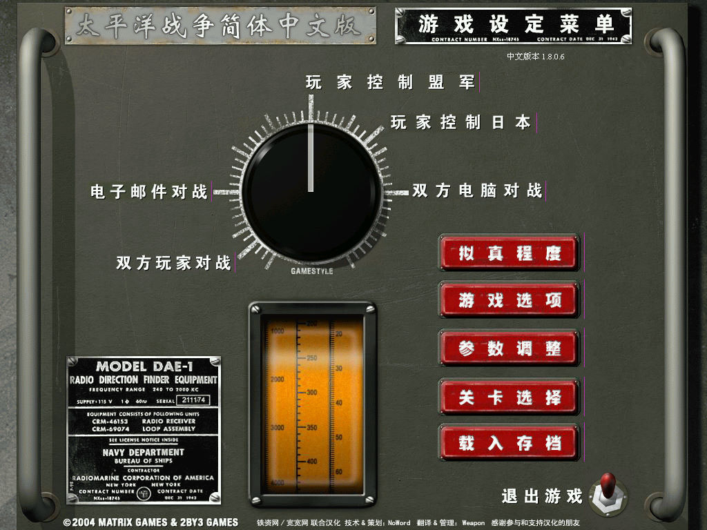
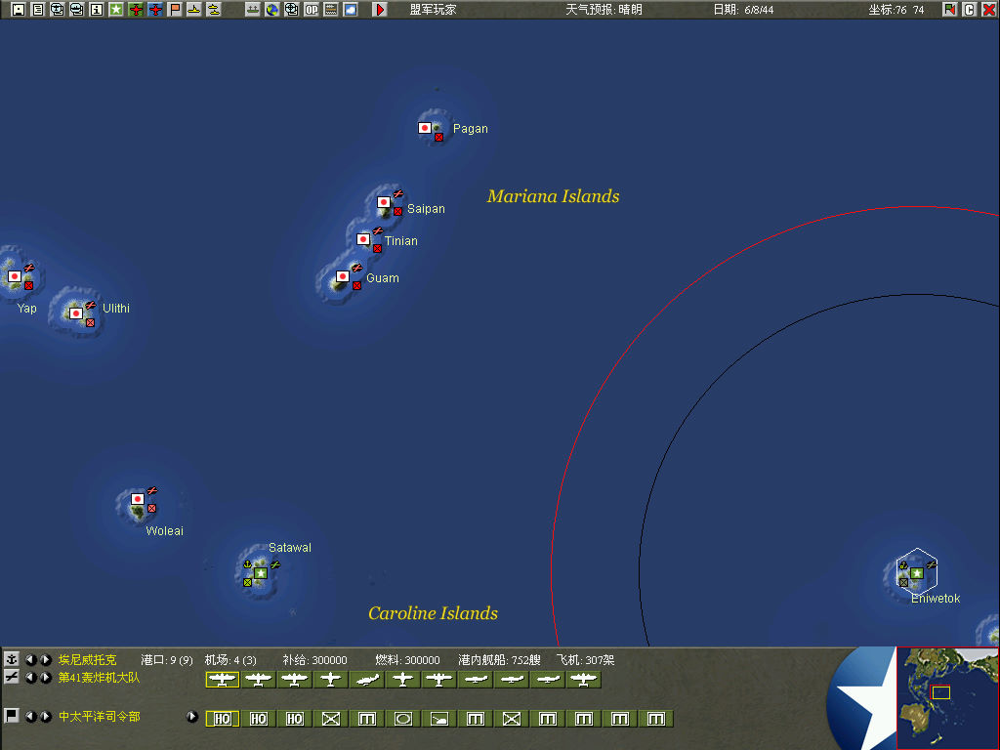

名稱：太平洋戰爭 (War in the Pacific: The Struggle Against Japan 1941–1945，簡中版) 簡介：斯普軟件2000年出品的即時策略遊戲，由會宇代理發行 [待補]。

備註：本版為1806V簡中漢化版，需在簡中系統執行，否則會亂碼 保護：不明 備註：非安裝移機者，需設定下列Registry： [HKEY_LOCAL_MACHINE\SOFTWARE\Matrix Games\War in the Pacific] [HKEY_LOCAL_MACHINE\SOFTWARE\WOW6432Node\Matrix Games\War in the Pacific] "version"="v1.804" "installed"="TRUE" "authorized"="youa-refi-redn-ow!!"